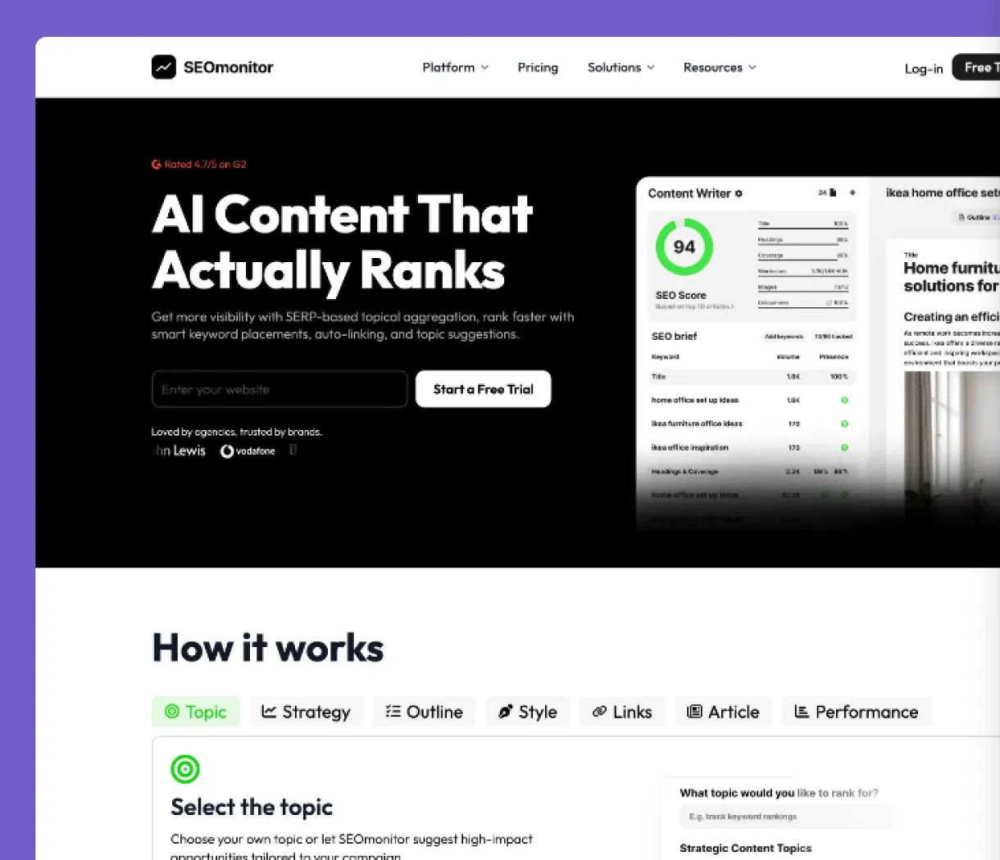
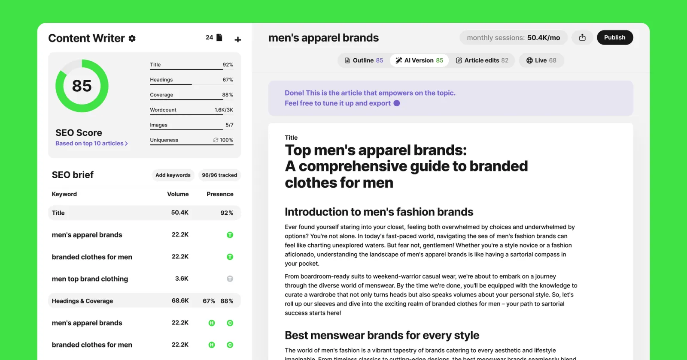
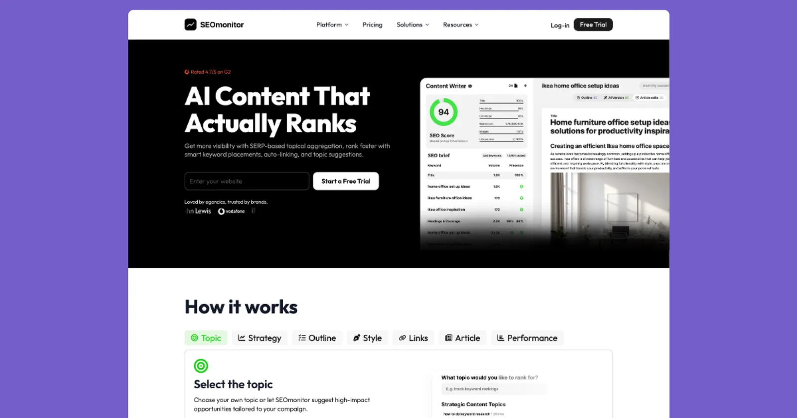
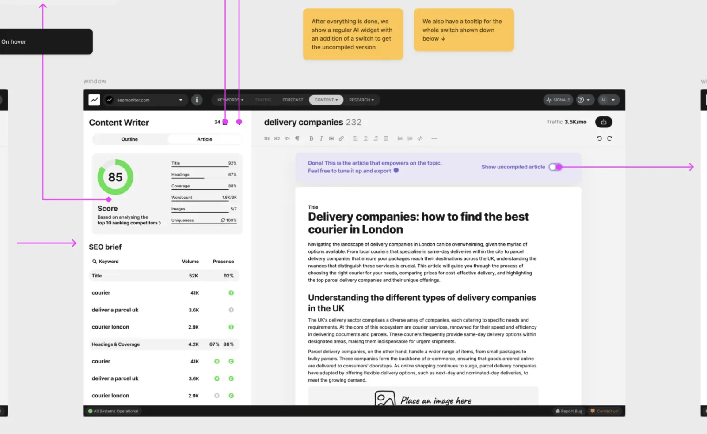
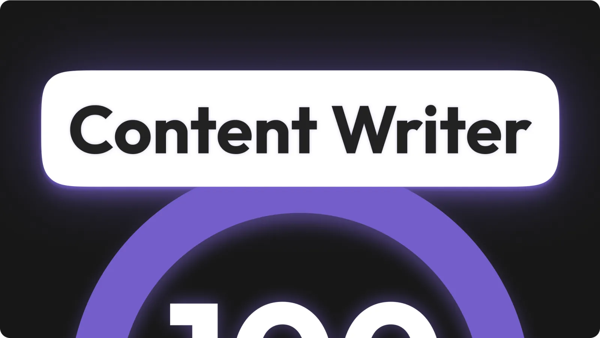
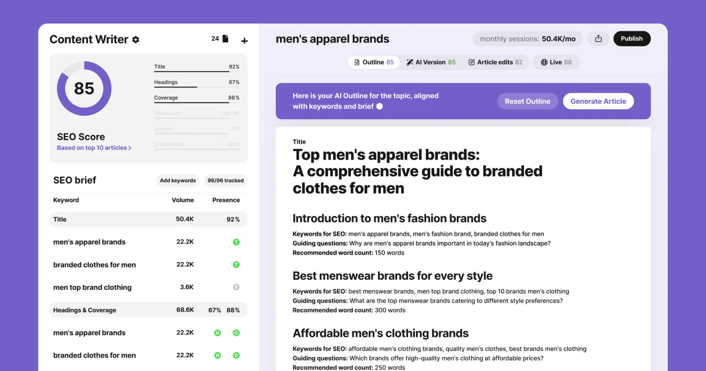
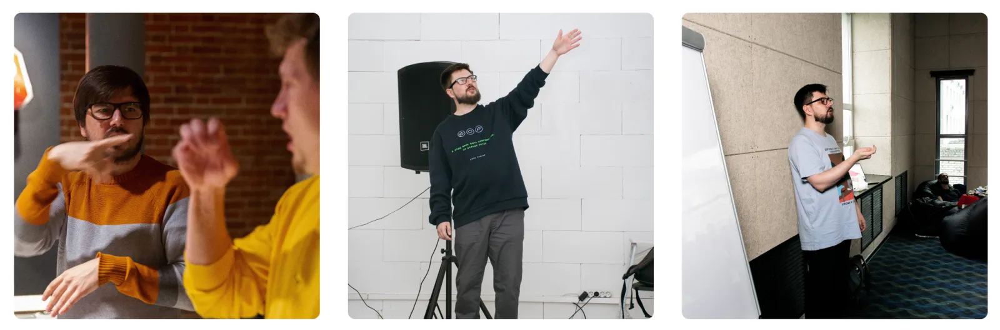

4× growth through product and marketing design for SEOmonitor's AI Content Writer

In 2022, SEOmonitor made a strategic move: to not just track SEO performance, but help agencies actively scale it. That meant solving one of their biggest problems — content production.
I led the design of Content Writer, an AI-powered tool built from scratch to generate SEO-optimized articles. From UX and internal systems to marketing sites and ad creatives, I designed everything needed to turn this product into the company's #1 growth driver.
My mission was to design the entire product and marketing engine.
Resulting in 80% of new clients attribution and €1.5M+ pipeline unlocked in a year.

Product design architecture from scratch
MVP in 3 months. Core to user activation and retention.
- Designed the entire product from scratch:
- AI article generation flow
- Keyword research integration
- Templates adapted to real agency workflows
- Built modular Figma system from day one to support rapid iterations
- Created internal tools for layout automation and faster dev integration
- Delivered daily to devs in tight loops, tested with real users weekly
Result: MVP shipped in under 3 months. Product usage scaled weekly. Became a key driver of client onboarding and retention.
Challenge: Shifting scope hit hard. Stakeholders kept tweaking based on user needs — pushing for more changes, more versions. Midway, a full app redesign was proposed. I stepped in, flagged the €10K+ cost and delay risk, and stopped it. That call protected the timeline. We shipped on schedule.

Marketing design to cover full pipeline
Designed for €1.5M ARR and 4× MQL growth.
- Designed and tested multiple landing pages across GTM stages
- Created ad creatives for LinkedIn campaigns (reduced CPL ~35%)
- Synced brand and product messages into one visual system
Result: Marketing-sourced pipeline reached €1.5M+ in Year 1. MQLs grew from ~500 to 2,000+ YoY. Design directly supported demand generation and conversion.
Challenge: Marketing was chaos by design — ads, emails, articles, webinars, conference booths. Each with its own strategy. All needed design. Fast. Iterative. Often AI-assisted. I handled the volume by setting tight systems and using my own efficiency methods to keep output high and messaging sharp.


Systematisation and handoff
Saved 300+ hours with simplified workflows, design system and templates.
- Delivered 3–5 projects per month across product and marketing
- Built reusable design templates for landing pages and campaigns
- Built pages directly in WordPress for rapid testing and deployment
- Created fast handoff specs and QA formats for dev team
- Replaced manual work with repeatable systems for scaling
Result: No extra design headcount needed. Design work delivered consistently without delays. Hours saved across dev and marketing through automation and clarity.
Testimonial
"Mitia was responsible for covering multiple directions at once: product, marketing, and systematisation. From the start, he worked on the hardest parts at SEOmonitor: pricing and product architecture. Team was highly satisfied both by his performance and the end metrics."
Kostia Konstantinopolskii
Head of Design at SEOmonitor

Want to learn more?
This is just a surface-level view. Under the hood: dozens of tests, fast iterations, and hard decisions that turned a tool into a growth engine. If you're working on a product where design needs to move the numbers — let's talk.
I'll walk you through the real breakdown.
Email · LinkedIn
Mitia Morovov, 2025
